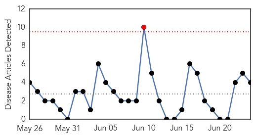
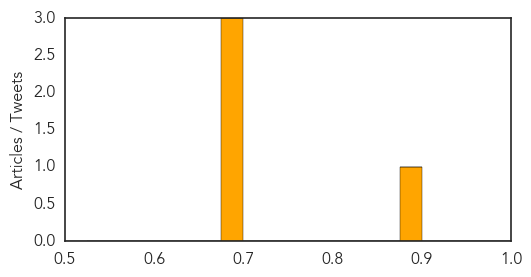

Pertussis
30-Day Web Trend
0 alerts, 0 warnings

30-Day Twitter Trend
0 alerts, 0 warnings

Article Locations
Article Confidences

Top Articles:
- 0.901
- Whooping Cough Vaccine May Not Prevent People From Becoming Healthy But Contagious Carriers
- 0.896
- Whooping cough resurgence due to vaccinated people not knowing they are infectious?
- 0.715
- Whooping cough resurgence may be due to vaccinated people
- 0.603
- Why delayed vaccination schedules are a bad idea
- 0.566
- Day-care vaccination rates in Michigan fall far below guidelines
Top Tweets:
-
No tweets found for Jun 24, 2015
Hepatitis
30-Day Web Trend
1 alerts, 0 warnings

30-Day Twitter Trend
0 alerts, 0 warnings

Article Locations

Article Confidences
Top Articles:
Top Tweets:
-
No tweets found for Jun 24, 2015